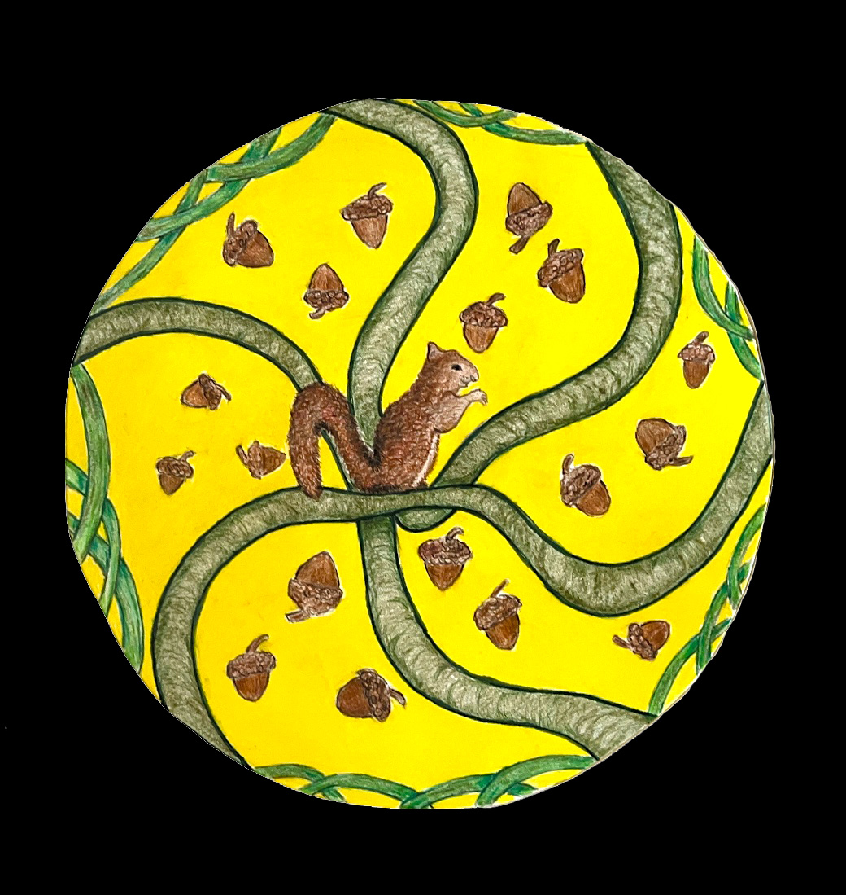

Portrait
A drawing of John Lennon (18x24)

Reliance
The concept of this drawing was to evoke a feeling of reliability through hardship. Jude Thomas, who has taken some of the initial pictures within the Digital Media tab, and his wife Hayley were out on a hike somewhere in a Washington state forest when a wildfire errupted. They narrowly escaped to tell the tale and I wanted to attempt to translate their conviction towards reliance on one and other through adversary. The figures are silhouetted to hopefuly allow others to see themselves in their place with who they may rely on.

Radial Balance
Made in conjunction with the main image above, I was assigned to achieve a sense of radial balance as well as asymmetrical balance respectiely. Radial balance refers to symmetry in several directions while asymmetrical balance results from unequal visual weight on each side of the composition. This was to be completed out of the same three objects for each composition. For this I chose a squirrel, acorns and vines.

Filling a Difficult Space
For this I was tasked with "filling a difficut space," the one above. I chose to attempt a gate-topper concept. It seems almost as if something is alive and growing around the birds, yet they pay no mind as they're perched in ignorant sublimation.

Figure/Ground
The two shapes define an invisible space within the background between them.

Plague Doctor
A plague doctor's mask focused on minimal, almost comical, lines and cross-hatching.

Black Pond
An impromptu watercolor composition.

Dock
A watercolor painting of an old photo.

Reductive Drawing
Reductive, also known as subtractive, drawing is a method of drawing where material such as graphite, charcoal or pastel is used to cover a surface and then the "drawing" is made by the removal of the media by erasing. For this piece I chose to attempt something similar to The Exorcist.

Boots Contour
One of my first contour drawings; a pair of old Timberland boots.

Still Life
The term “still life” describes a work of art that shows inanimate objects from the natural or man-made world, such as fruit, flowers, dead game, and/or vessels like baskets or bowls. Looked at another way: still lifes depict things that are “still” and don't move. For this still life I was tasked to chose a variety of everyday objects. For this I chose an old hat, a bottle of cologne and a coffee mug.